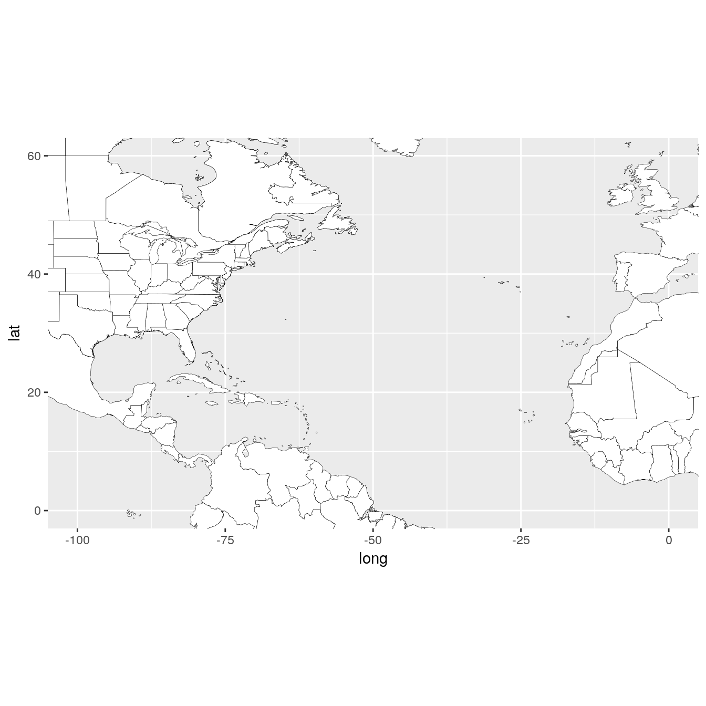
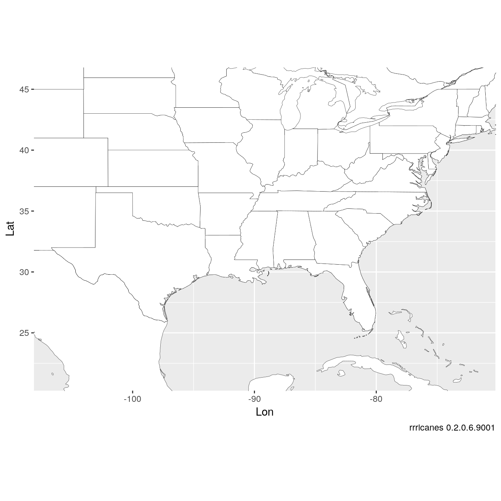
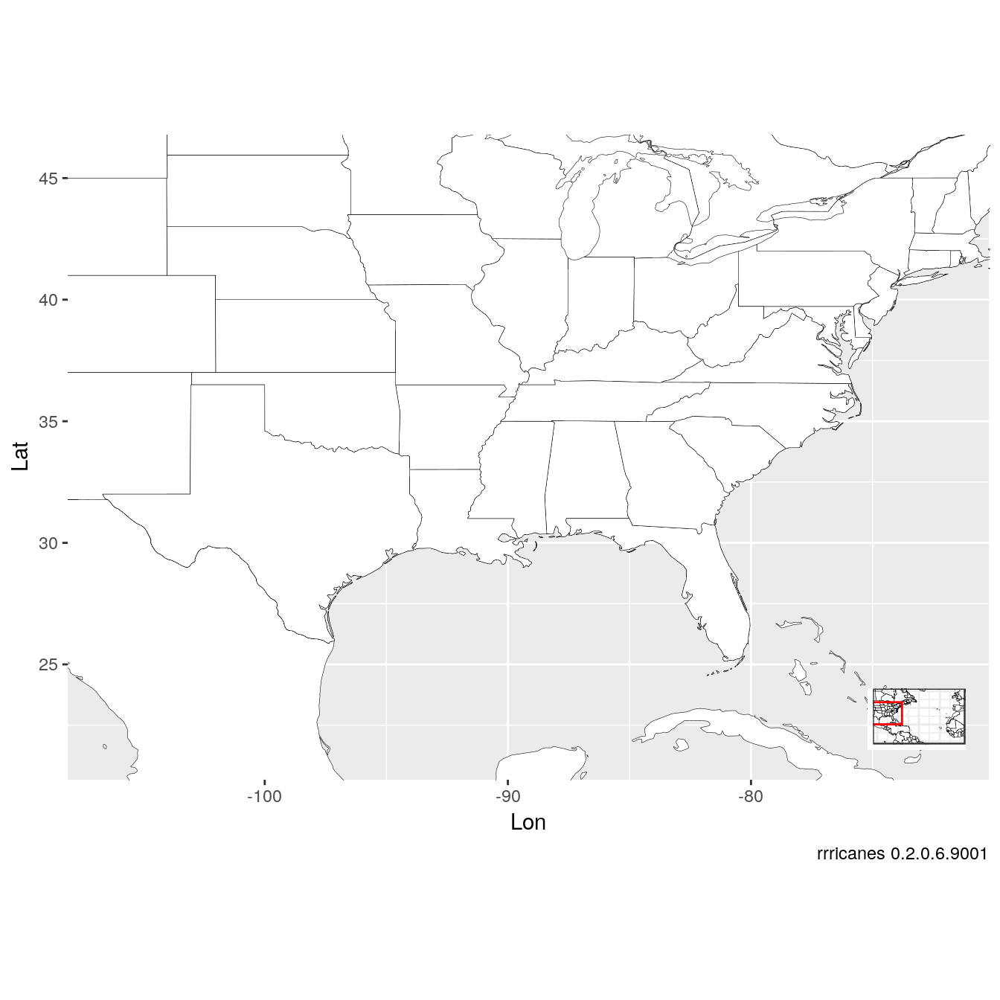
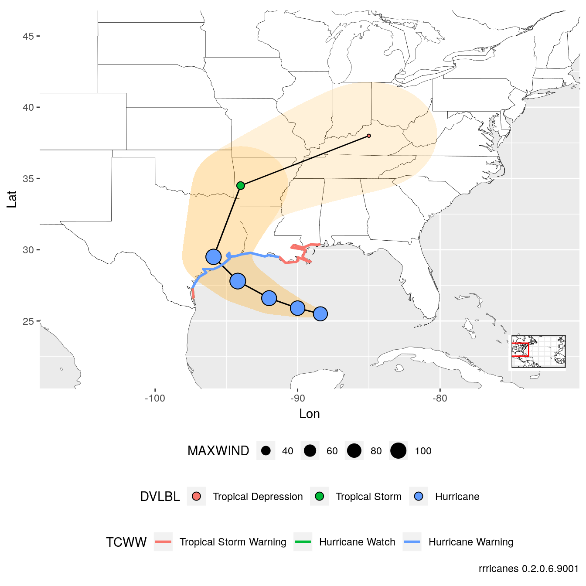

vignettes/forecast_advisory.Rmd
forecast_advisory.Rmd## OGR data source with driver: ESRI Shapefile
## Source: "/tmp/Rtmpo0A76k", layer: "al092008.042_5day_lin"
## with 2 features
## It has 9 fields
## OGR data source with driver: ESRI Shapefile
## Source: "/tmp/Rtmpo0A76k", layer: "al092008.042_5day_pgn"
## with 2 features
## It has 9 fields
## OGR data source with driver: ESRI Shapefile
## Source: "/tmp/Rtmpo0A76k", layer: "al092008.042_5day_pts"
## with 13 features
## It has 20 fields
## OGR data source with driver: ESRI Shapefile
## Source: "/tmp/Rtmpo0A76k", layer: "al092008.042_ww_wwlin"
## with 5 features
## It has 10 fieldsGet bounding box of the forecast polygon.
Generate a base plot of the Atlantic ocean.
## Regions defined for each Polygons
## Regions defined for each Polygons## Coordinate system already present. Adding new coordinate system, which will replace the existing one.
I like to add a little cushion for the map inset and forecast cone data.
lat_min <- bbox[2,1] - 5
lat_max <- bbox[2,2] + 5
lon_min <- bbox[1,1] - 10
lon_max <- bbox[1,2] + 10Build a thin tracking map for the inset.
bp_inset <- ggplotGrob(bp +
geom_rect(mapping = aes(xmin = lon_min, xmax = lon_max,
ymin = lat_min, ymax = lat_max),
color = "red", alpha = 0) +
theme_bw() +
theme(axis.title = element_blank(),
axis.ticks = element_blank(),
axis.text.x = element_blank(),
axis.text.y = element_blank(),
plot.margin = margin(0, 0, 0, 0, "pt")))Modify original bp zoomed in on our area of interest.
(bp <- bp +
coord_equal(xlim = c(lon_min, lon_max),
ylim = c(lat_min, lat_max)) +
scale_x_continuous(expand = c(0, 0)) +
scale_y_continuous(expand = c(0, 0)) +
labs(x = "Lon",
y = "Lat",
caption = sprintf("rrricanes %s", packageVersion("rrricanes"))))## Coordinate system already present. Adding new coordinate system, which will replace the existing one.
Combine bp and bp_inset to finalize initial base plot. bp will be a base plot without the inset. bpi will have the inset.
(bpi <- bp + annotation_custom(grob = bp_inset, xmin = lon_max - 5,
xmax = lon_max - 1, ymin = -Inf,
ymax = lat_min + 5))
Lines and Polygons spatial dataframes can be helpfully converted using shp_to_df. The original spatial dataframes can be plotted directly in ggplot2 but, to my understanding, access to the other variables are not available.
# Convert object SpatialLinesDataframe to dataframe
shp_storm_lin <- shp_to_df(gis_adv$al092008.042_5day_lin)## Warning in bind_rows_(x, .id): Unequal factor levels: coercing to character## Warning in bind_rows_(x, .id): binding character and factor vector,
## coercing into character vector
## Warning in bind_rows_(x, .id): binding character and factor vector,
## coercing into character vector## Warning in bind_rows_(x, .id): Unequal factor levels: coercing to character
## Warning in bind_rows_(x, .id): binding character and factor vector,
## coercing into character vector
## Warning in bind_rows_(x, .id): binding character and factor vector,
## coercing into character vector
## Warning in bind_rows_(x, .id): binding character and factor vector,
## coercing into character vector
## Warning in bind_rows_(x, .id): binding character and factor vector,
## coercing into character vector
## Warning in bind_rows_(x, .id): binding character and factor vector,
## coercing into character vector# Convert object SpatialPolygonsDataframe to dataframe
shp_storm_pgn <- shp_to_df(gis_adv$al092008.042_5day_pgn)## Warning in bind_rows_(x, .id): Unequal factor levels: coercing to character
## Warning in bind_rows_(x, .id): binding character and factor vector,
## coercing into character vector
## Warning in bind_rows_(x, .id): binding character and factor vector,
## coercing into character vectorPoints dataframes can just be converted with tibble::as_data_frame.
# Convert object SpatialPointsDataframe to dataframe
shp_storm_pts <- as_data_frame(gis_adv$al092008.042_5day_pts)## Warning: `as_data_frame()` is deprecated, use `as_tibble()` (but mind the new semantics).
## This warning is displayed once per session.Modify shp_storm_pts$DVLBL with full strings and ordered factor.
shp_storm_pts$DVLBL <- factor(shp_storm_pts$DVLBL,
levels = c("D", "S", "H"),
labels = c("Tropical Depression",
"Tropical Storm",
"Hurricane"))Same with shp_storm_pts$TCWW:
shp_storm_ww$TCWW <- factor(shp_storm_ww$TCWW,
levels = c("TWA", "TWR", "HWA", "HWR"),
labels = c("Tropical Storm Watch",
"Tropical Storm Warning",
"Hurricane Watch",
"Hurricane Warning"))bpi + geom_polygon(data = shp_storm_pgn,
aes(x = long, y = lat, group = group),
alpha = 0.15, fill = "orange") +
geom_path(data = shp_storm_lin, aes(x = long, y = lat, group = group)) +
geom_point(data = shp_storm_pts, aes(x = LON, y = LAT, fill = DVLBL,
shape = DVLBL, size = MAXWIND)) +
geom_path(data = shp_storm_ww, aes(x = long, y = lat, color = TCWW,
group = group), size = 1) +
scale_shape_manual(values = c(21, 21, 21, 21)) +
guides(shape = guide_legend(override.aes = list(size = 3)),
size = guide_legend(nrow = 1)) +
theme(legend.position = "bottom",
legend.box = "vertical")
Very often, areas that are under a hurricane watch may also be under a tropical storm warning. The chart above does not show the hurricane watch area.